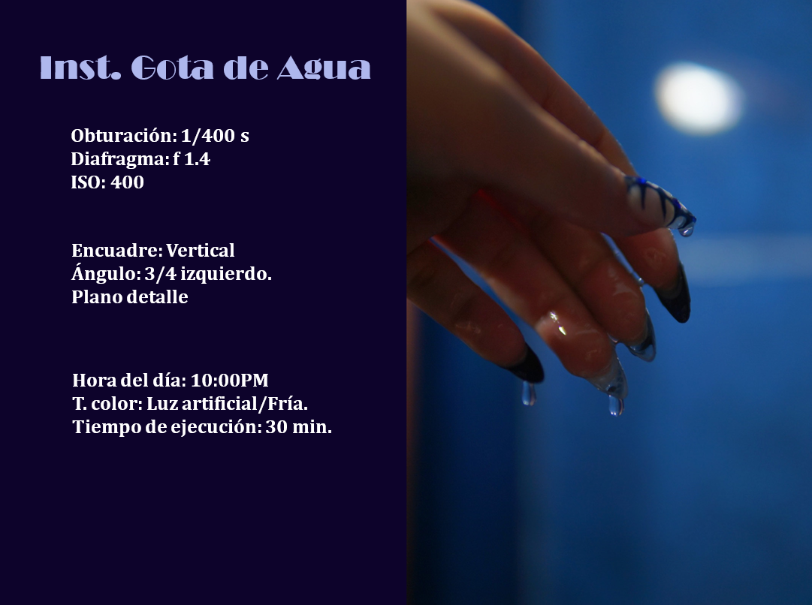
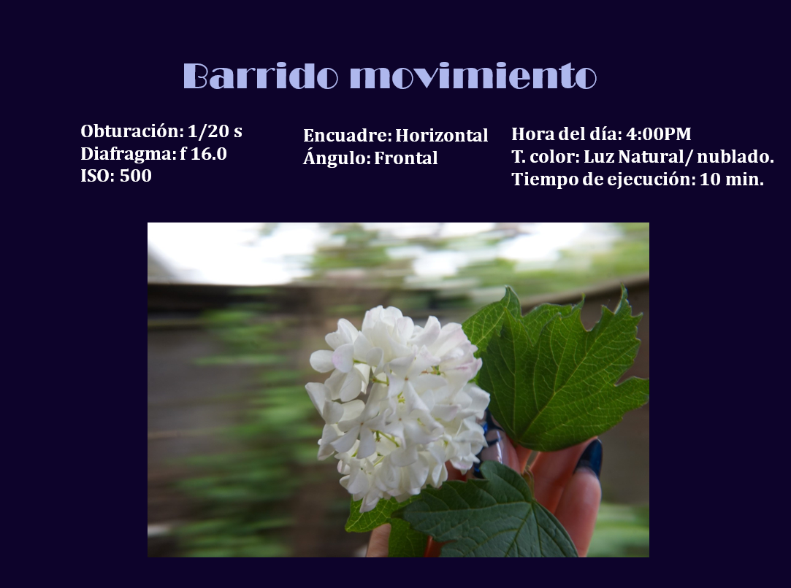
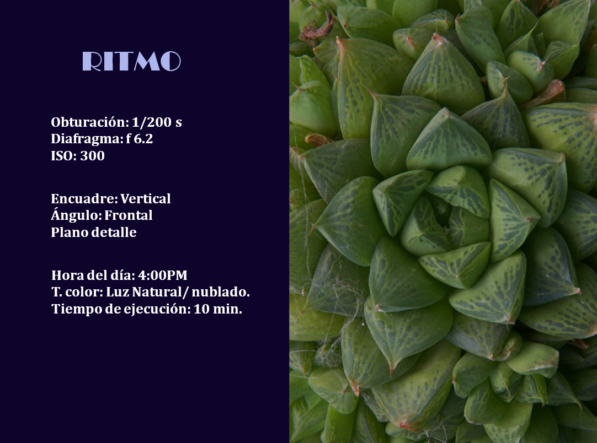
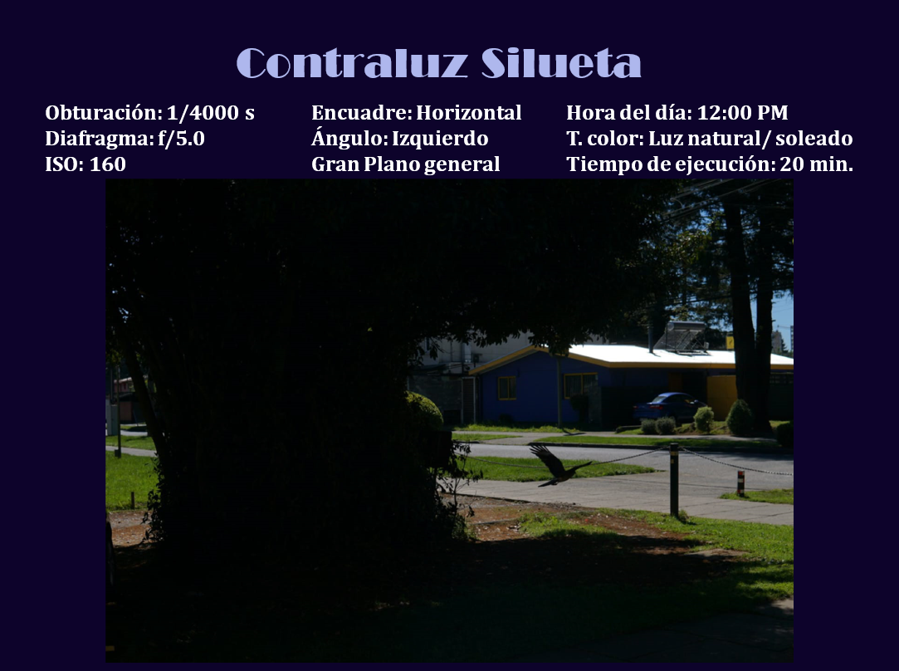
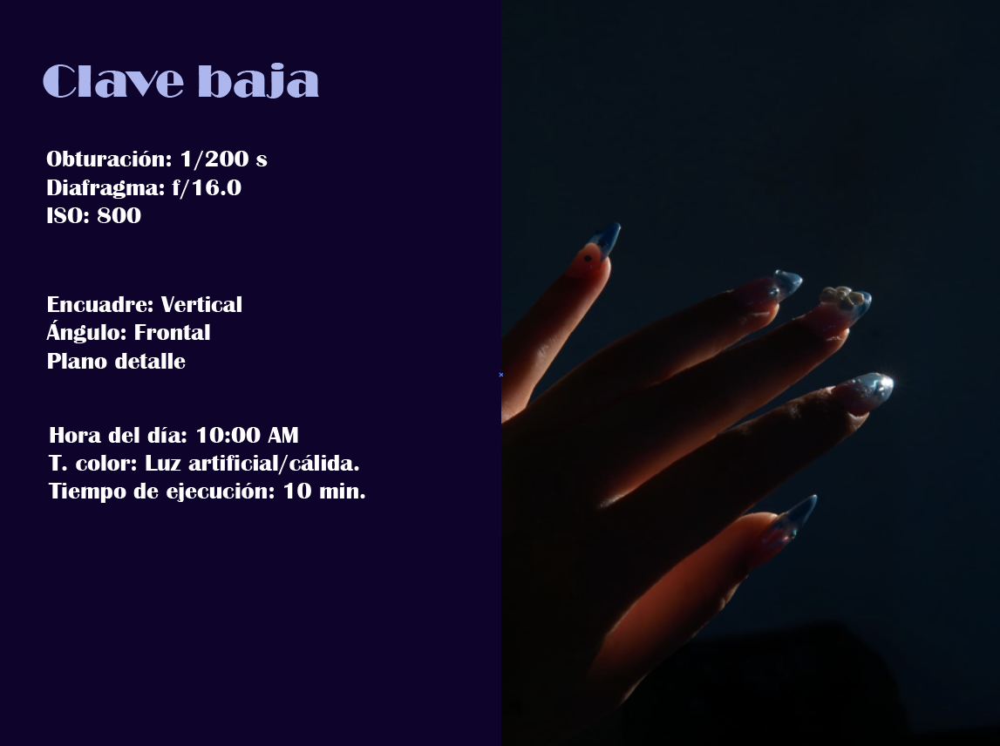
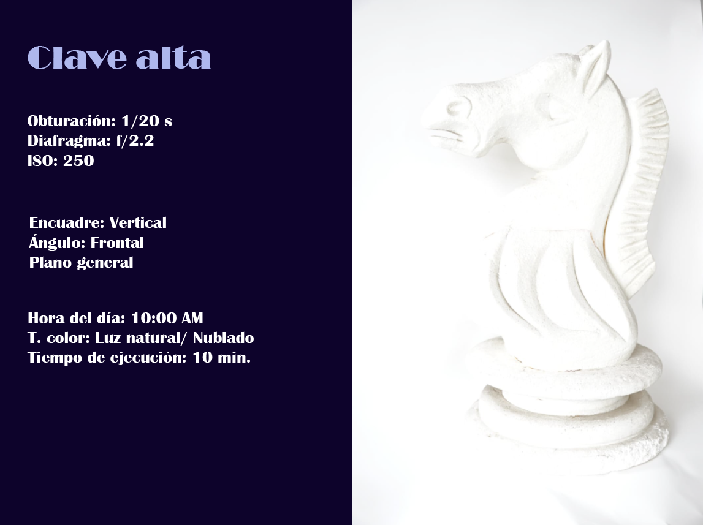
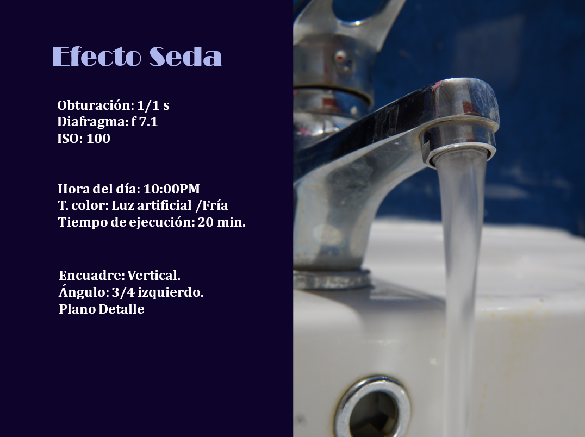
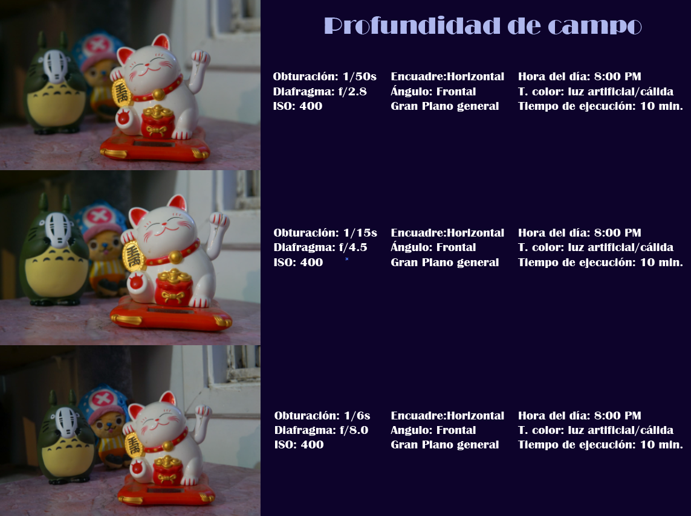

Bitácora Fotográfica
Realizacion de una Bitácora Fotográfica, donde se identificaron parametros base para poder sacar distintos tipos de fotografia, en este caso veremos clave baja, clave alta, instantanea en movimiento, efecto seda de agua, etc.
Lugar
Cuidad de Temuco
Tiempo de desarrollo
2 semanas
Tecnologias utilizadas:
Revisa este proyecto en:







